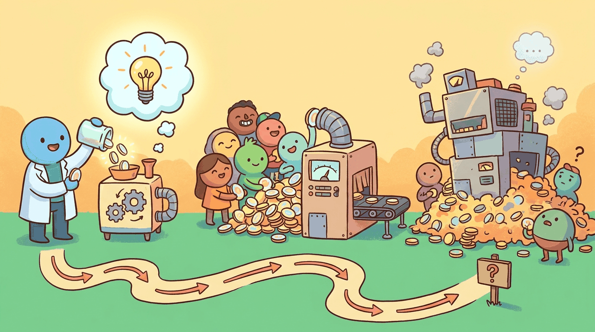

Every LLM dollar buys something specific, and at some volume the unit economics either work or they don't. This chapter covers scaling economics: ROI measurement, value attribution, and the economic design of LLM systems so that growth doesn't kill the margin.
The canonical pricing-dynamic anchor is the roughly 10x cost drop from GPT-4 to GPT-4o (May 2024) at comparable quality, the move that retroactively rewrote unit economics for thousands of deployed products. The price/performance disruption anchor is DeepSeek-V3 (Dec 2024), reported to have trained for roughly \$5.5M in compute against frontier-tier benchmarks. The unit-economics-at-scale anchor is Cursor, which by 2025 was running an estimated \$8M-per-year inference bill against \$100M+ ARR, illustrating both the gross-margin pressure and the leverage of effective routing strategies.
Sections in This Chapter
What Comes Next
In the next section, Section 64.1: ROI Measurement & Value Attribution, we get to work on the chapter's first concrete topic. After this chapter you continue to Chapter 69: Shipping and Scaling AI Products.